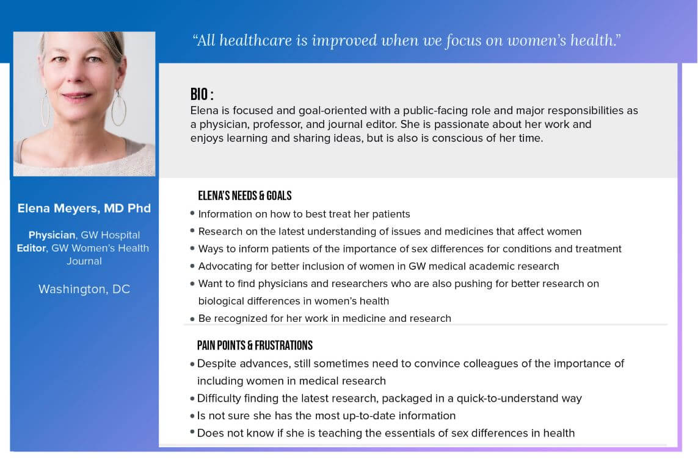
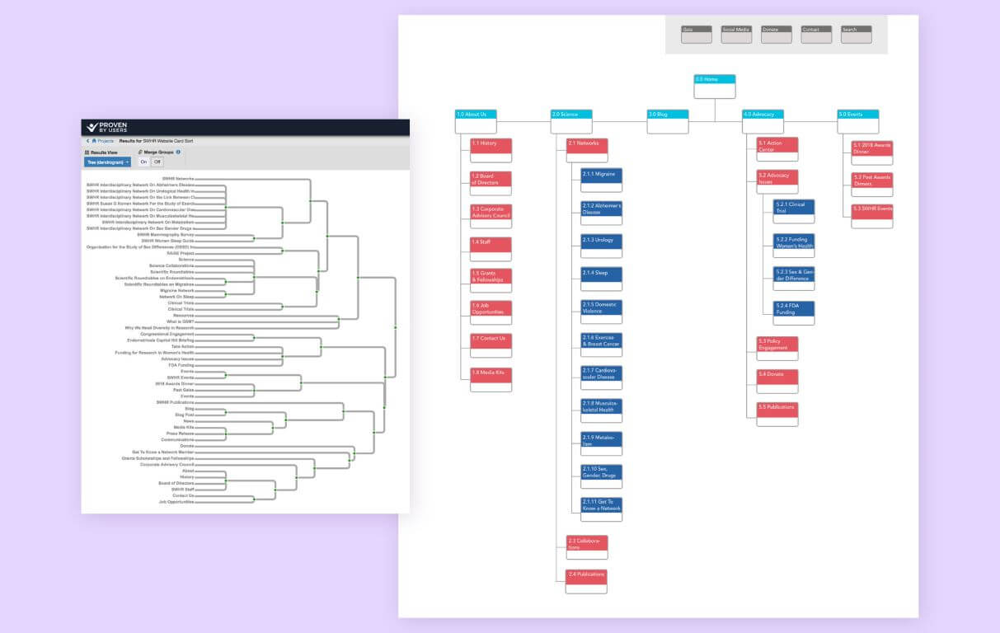
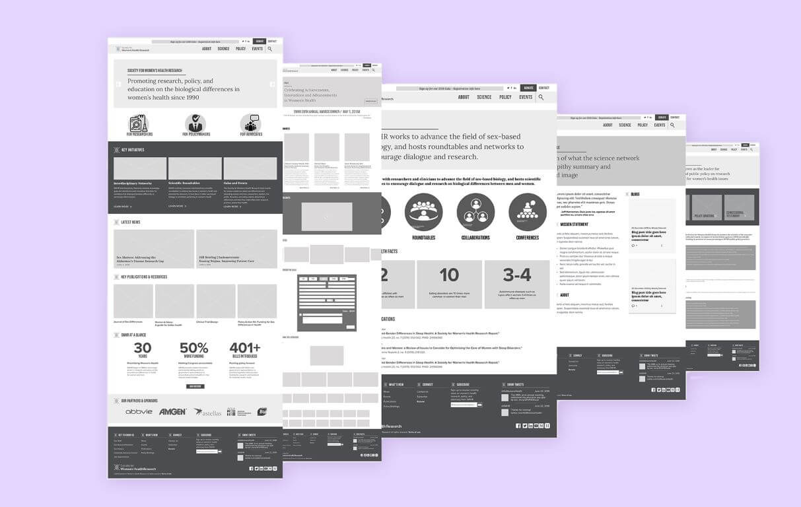
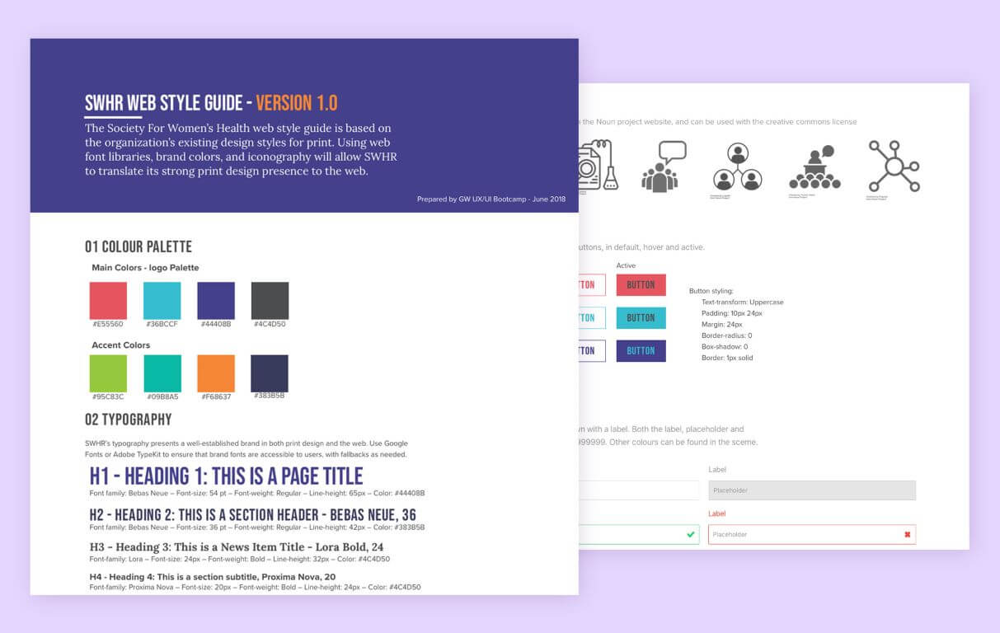

As a research and advocacy organization, the Society for Women’s Health Research (SWHR) needed to demonstrate its thought leadership in the field of women’s health with an organized and refreshed web redesign.
Problem
The Society for Women’s Health Research (SWHR) is a national nonprofit based in Washington, D.C, that is widely recognized as a thought leader in promoting research on biological differences in disease and improving women’s health through science, advocacy, and education. Founded in 1990 by a group of physicians, medical researchers and health advocates, SWHR aims to bring attention to the variety of diseases and conditions that disproportionately or predominately affect women.
As the online home for all SWHR research and past policy initiatives, the organization needs the site to present a well-organized system for anyone looking for relevant resources. With so many people responsible for the website, they have stored resources in various places over the years, and the information architecture of the site had lost a unified sense of organization. The redesign for the Society for Women's Health Research site required fleshing out an existing style guide and structuring content to meet user needs.
Approach
Discovery
Our early discovery with key SWHR stakeholders saught to uncover the underlying goals of the organizational website. As a designer who is also focused on strategy and understanding user goals, it was important to help the SWHR stakeholders articulate their needs, and help them understand where their needs as an organization overlapped with the needs of their users
Following the kick-off meeting, we performed an affinity mapping exercise to group the pain points described by the organization staff. These included:
Navigation
Content
Branding
Functionality
Our team also worked to identify the existing assets that the SWHR team uses to shape their content and editorial style. Working closely with all members of the UX team, I was ultimately responsible for much of the project management and client communication. Additionally, I drafted UI designs that set the direction for the redesign and was responsible for designing the homepage and new style guide.
User Research
Our team developed a survey to determine user frequency, competitor site use, and main user needs. With my background in non-profit communications, I was able to shape the language on questions surrounding site use and defining user needs. I compiled Google analytics data from the SWHR communications lead to better understand the essential features and information on the site. I was interested to learn that the SWHR user base actually had a low bounce rate, despite the concerns from the organization about their information architecture and resource disarray. I also highlighted top pages, returning users, and referral traffic for the organization.

Personas helped our design team articulate the user needs identified in our surveys.
Persona Development
Our team built out personas based on our understanding of the main site users. While our research focused mainly on internal stakeholders, we used our understanding of the organization to create a proto persona representing many of the site’s ideal user goals. The personas highlighted potential pain points for the SWHR internal audience, and gave a human face to the user we were designing for.

The UX research leads on our team helped compile our survey data, and to create a dendrogram that represented the navigation reached by concensus of all surveyed users.
Information Architecture and Site Navigation
One of the main needs we heard in our stakeholder and user interviews was for improved site navigation and content organization. To better understand the organization of the SWHR site structure, I first mapped the many pages of the site with the XML Sitemap tool xml-sitemaps.com. The team also created a visual sitemap for the existing site. We noted where content was organized, and where the system had broken down, with documents stored haphazardly.
After poring through the SWHR site and archives, we then used card sorting to build consensus on the navigation items. Using the tool Proven By Users, we culled multiple organization systems into one approach. Finally, we built a new recommended site map according to the information dendrogram that emerged from our card sort. While our final site map did not diverge dramatically from the existing site map, we highlighted where certain sub-menu items were repetitive or misnamed and made recommendations based on the organization’s stated messaging goals. For example, the original sitemap included resources under the science, advocacy, and events menu items. We encouraged the organization to rename “Advocacy” to “Policy” to better match stated needs, and to move the resources to their own independent section. With more time, I would have liked to have developed a proper taxonomy for resource tagging and organization, as well as a filtering system for the resource library.
We also reexamined at the utility navigation, and used information from stakeholder and user interviews to focus in on what mattered most.

I created the homepage wireframe and set the overarching organizational framework for the redesign.
Solutions
Style Guide
The organization already had commissioned print design standards, but had not interpreted these for use on the web. I provided web font recommendations and fallbacks for the web style guide. I also used existing color associations to find the right use of color for the web.
Other recommendations for future exploration include “chunking” content into easily digestible sections, and organizing content on pages with the most

The organization had an existing style document for print that I translated for the web, highlighting the importance of consistency in brand fonts and colors.
High-Fidelity Prototypes
Our team created multiple high-fidelity mockups of the new site, updating page templates with our suggested style guide, site structure and navigation.
The redesign for the Society for Women's Health Research site required fleshing out an existing style guide and organizing content in a more intuitive structure to meet user needs.